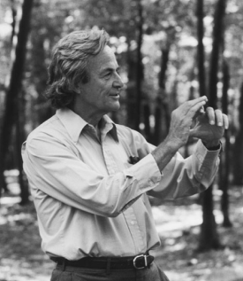

Feynman technique
Feynmanova technika je metoda učení, kterou vyvinul a pojmenoval po něm slavný americký fyzik Richard Feynman. Tato technika pomáhá studentům lépe porozumět složitým konceptům a zlepšit své učení.
Jak na to
- Vyberte si koncept nebo téma, které se chcete naučit. Může to být cokoli, od fyzikálních zákonů po historické události.
- Vezměte si prázdný list papíru a napište název konceptu nebo tématu na vrcholu stránky.
- Nyní se pokuste vysvětlit tento koncept nebo téma svými vlastními slovy, jako byste to měli vysvětlit někomu, kdo o tom nemá žádné předchozí znalosti. Píšete tak, jako byste učili imaginárního studenta.
- Pokud narazíte na nějaké nejasnosti nebo si nejste jisti, jak něco vysvětlit, vraťte se zpět ke studiu. Zkuste najít další zdroje informací, přečtěte si učebnice, sledujte videa nebo se poraďte s učitelem. Cílem je dosáhnout hlubšího porozumění.
- Jakmile se vrátíte ke svému popisu, pokuste se ho zjednodušit a zpřesnit. Eliminujte zbytečné technické termíny a použijte jasný, každému srozumitelný jazyk.
- Opakujte kroky 3 a 4, dokud nedokážete vysvětlit koncept tak jednoduše a srozumitelně, že by to pochopil i dítě.
Tento proces vás nutí získat hlubší porozumění studovanému konceptu. Když jste schopni vysvětlit věc jednoduchým způsobem, znamená to, že jste si ji skutečně osvojili. Feynmanova technika je také užitečná při odhalování mezery ve svých znalostech a zjišťování oblastí, které si ještě musíte více osvojit.
Kdo je Richard Feynman
Richard Feynman (1918-1988) byl významný americký fyzik, známý pro svou práci v oblasti kvantové elektrodynamiky a Feynmanovy diagramy. Získal Nobelovu cenu za fyziku v roce 1965 za své přínosy v oblasti kvantové elektrodynamiky. Feynmanovy diagramy umožnily vizualizaci interakcí mezi částicemi a zlepšily porozumění jejich chování. Byl také vášnivým popularizátorem vědy a jeho kniha "Surely You're Joking, Mr. Feynman!" získala velkou popularitu. Jeho přístup k vědě a schopnost jednoduchého vysvětlování složitých konceptů ho učinily významnou postavou ve fyzikálním světě. Feynmanův vliv a jeho myšlenky mají trvalý dopad na vědeckou komunitu. Jeho práce přispěla k rozvoji různých oblastí fyziky, jako je kvantová mechanika a teorie elementárních částic. Feynmanovo dědictví zůstává důležitou součástí vědeckého poznání dodnes.